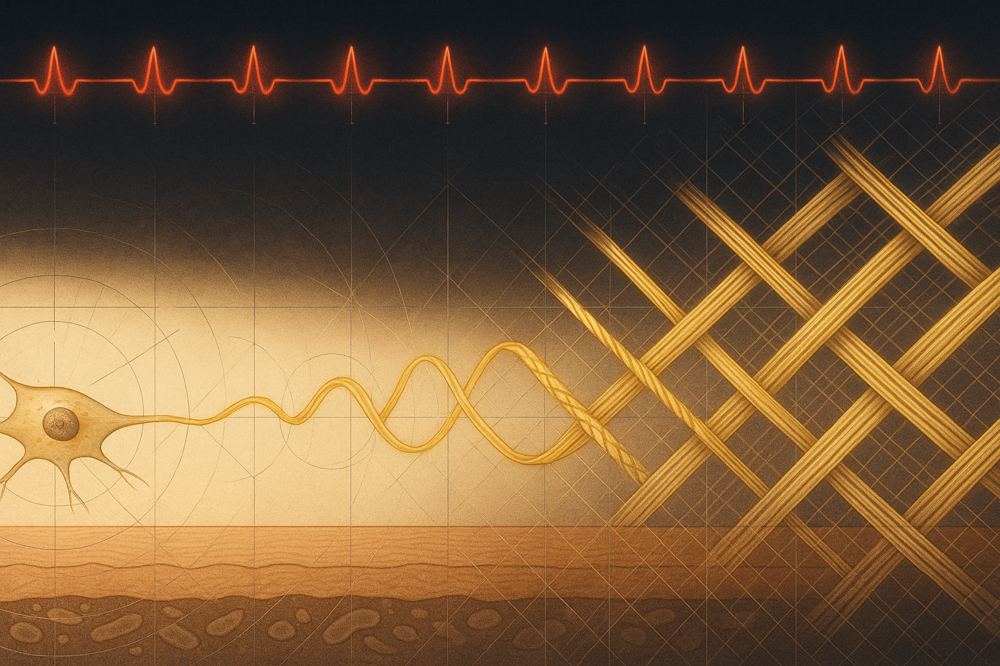
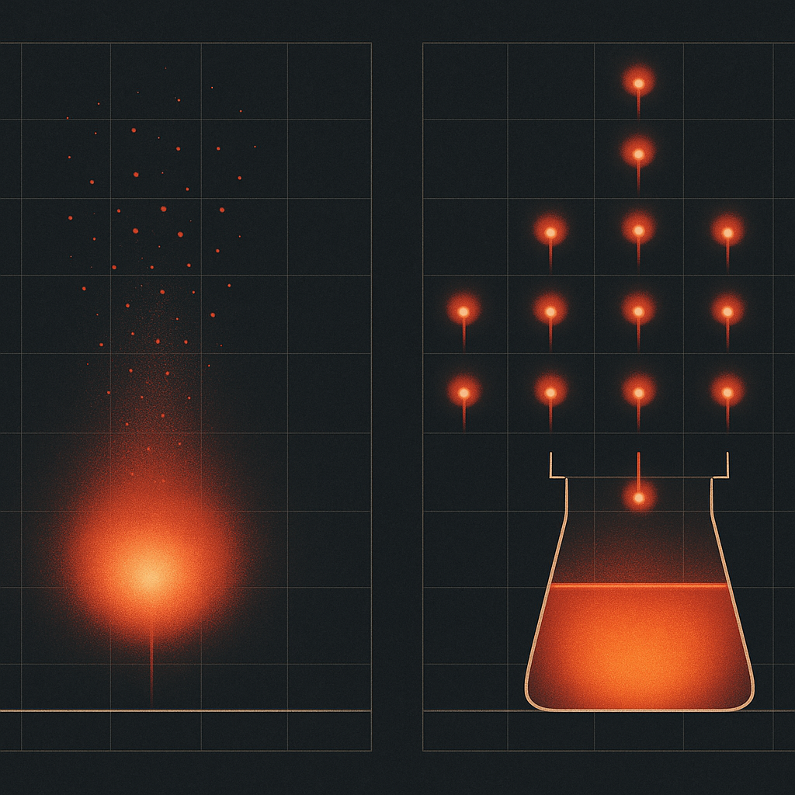
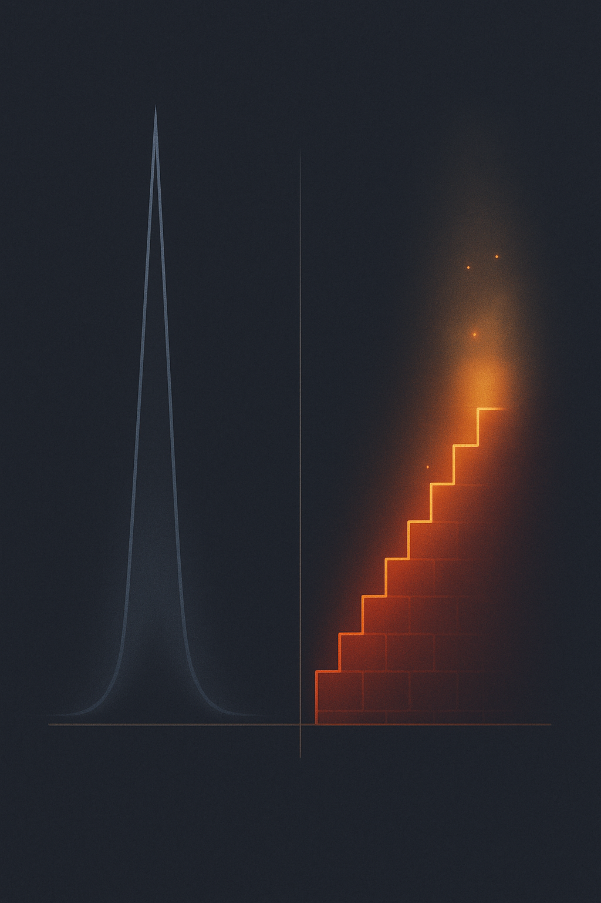

Review below. Reply approve to publish the Facebook post, or tell me edits.

Here is an uncomfortable truth about at-home skincare, LED masks included: most of it does not fail on the bench. The device works. The serum is fine. What fails is week three.
That is the point where the novelty wears off, life gets busy, and the routine quietly drops from daily to "when I remember". Nobody decides to quit. It just happens. And because the biology of skin rewards repetition above almost everything else, the drop-off is where most of the promised results actually go to die.
So this post is not about wavelengths or ingredients. It is about the two things that decide whether any skincare step works for you: why your skin responds to small repeated signals rather than one big burst, and how to build a habit that survives week three.
Short, honest answer: yes, there is a real mechanism, and no, it is not magic. LED light therapy benefits are gradual and modest, and they only show up if the light keeps arriving. The proper name for what is happening is photobiomodulation. Stripped of the jargon, it means certain wavelengths of visible light (a red mask sits around 630nm, worn for roughly ten minutes a day) can gently nudge how skin cells function. So the device is rarely the variable that decides whether it works for you. Your consistency is. Don't expect a dramatic before-and-after by week one. Expect small, compounding change over weeks, and only if the sessions actually happen.
The processes people are usually trying to influence, firmer-looking skin, better tone, a healthier glow, run on slow machinery. Collagen is built and remodelled over weeks and months, not days. Microcirculation, the fine network of small vessels that feeds the skin, responds to conditions over time, not to a single dramatic intervention.
The light-based nudge we just named is a good example. The key word is nudge. It supports cell activity while the signal is arriving regularly. It does not bank results in advance, and it does not let you cram.
Which leads to the part most people get backwards: more minutes in one sitting does not fast-forward a biological timeline. Doubling a session tonight does not buy you tomorrow off. But the reverse is not symmetrical, because skipping four days does let momentum fade. Slow, cumulative processes need the signal to keep showing up.
The honest analogy is not a one-off salon treatment. It is flossing, or watering a plant. Nobody floss-binges on Sunday and expects healthy gums by Friday. The value is entirely in the repetition, and any single session, viewed alone, looks almost pointless. That is not a flaw. That is how slow biology works.
Skin keeps score of your averages, not your personal bests.
Not because the technology is fake. Because the habit was never designed.
Most devices arrive, get used enthusiastically for a fortnight, then migrate to a drawer. None of this is mysterious: motivation is a terrible foundation for a daily habit, because motivation is highest on day one and lowest exactly when the habit matters most. If your routine depends on feeling enthusiastic, it has a built-in expiry date.
The good news: sticking with it is not really about willpower, it is about setup. And setup you can fix. Here is a simple framework you can apply to any skincare step, from a retinol to a mask to plain sunscreen.
This is habit-stacking. Do not rely on remembering; attach the new step to a cue that already happens every night without fail. "After I brush my teeth, I do my ten minutes." The existing habit becomes the trigger, so the new one needs no willpower to start.
Every small obstacle between you and the habit is a place the habit dies. If a device lives in a drawer, uncharged, you will not reach for it on a tired Tuesday. Keep it charged, visible, and where the habit happens: by the bathroom sink, next to the kettle. The rule of thumb: if starting takes more than about twenty seconds of fuss, fix the setup, not yourself.
Ten minutes is short on purpose. It is long enough for a consistent daily signal and short enough that exhaustion is never a valid excuse. If your routine only survives on high-energy days, it is too long.
The dip is not a personal failing, it is a schedule. Novelty fades at roughly the same point that visible results have not yet arrived, and that gap is where routines die. Expect it. Decide in advance what the bare-minimum version looks like (do the step badly rather than skip it), and judge yourself on showing up, not on the mirror.
Daily, briefly, is the honest answer, and it beats occasionally-but-intensely every time. A mask like ours is built around ten minutes a day for exactly this reason: it is a gentle daily habit that supports microcirculation and skin looking healthier over weeks. It is a cosmetic device, not medicine, and no single session will show you anything. The realistic window for noticing changes in glow and tone is weeks, not days, and only if the sessions actually happen.
There is one more benefit worth naming plainly, with no biology required: ten minutes with a mask on is ten minutes you cannot scroll. Enforced, phone-free stillness at the end of the day has value entirely on its own. We will not claim the light does anything to your stress levels. The pause does.
If you take one thing from all of this, take these four. Screenshot them:
If 2026 skincare has one honest trend, it is fatigue with twelve-step routines. The win is not a tenth serum you abandon by spring. It is subtraction: one repeatable step, designed so you cannot easily quit it, kept for months.
We will be straight with you: Redermis is a young Australian brand without a wall of reviews yet, and we are not going to invent one. We are also not going to tell you a device can outperform your own consistency. It cannot. Whatever you choose to use, the step that works is the one still happening in six weeks.
If you ever want a closer look at the mask and the full spec, it is here.

Most LED masks do not fail on the shelf. They fail in the third week, when the novelty wears off and the device goes back in the drawer.
Here is why that matters. Collagen turnover and microcirculation are slow processes. They respond to a small signal repeated over weeks, not one heroic session on a Sunday night. You cannot bank biology, and you cannot rush it. Skin keeps score of your averages, not your personal bests.
So do not build a routine on willpower. Build it on setup:
1. Habit-stack it: bolt the ten minutes onto something you never skip, after you brush your teeth, or while the kettle boils.
2. Lower the friction: keep it charged and in plain sight, not buried in a drawer.
3. Keep it short: ten minutes, so "too tired" never wins.
4. Plan for the dip: week three is where routines quietly die, so expect it and show up anyway.
And think subtraction, not addition. One short step you keep beats five you abandon by August. Ten minutes. Every day. Boring, and that is the point.
That was the whole design brief behind our mask: a gentle daily habit that supports microcirculation and skin looking healthier over weeks. A cosmetic device, not medicine. We are a new Aussie brand, so we would rather be straight than loud.
Save this if you have ever ghosted your own routine by March.
No pitch today. Just a question, because we are genuinely curious: how many days did your longest skincare streak ever last? Drop the number below.
If you ever want a closer look at what we built and the full spec, it is here: https://redermis.com.au/products/medical-grade-silicone-7-wevelenghts-photon-led-mask-face-and-neck-red-light-therapy-flexible-facial-mask-repair-skin-wireless-use
#RedLightTherapy #SkinLongevity #SkincareRoutine #HabitStacking
IMAGE PROMPT: Two-panel editorial science diagram in the restrained structured style of Scientific American or New Scientist, on a deep charcoal ground with generous negative space and a flat sophisticated print finish. LEFT panel titled by composition as "one big burst" (no actual words): a single large warm-red pulse flaring once, a bright bloom of energy releasing in one moment and scattering upward into a spray of fading embers that dim and die out, leaving an empty hairline baseline below with almost nothing accumulated on it. RIGHT panel as "steady repetition": many small, identical warm-red pulses spaced at perfectly even metronomic intervals, each one dropping cleanly downward into a precise geometric glass vessel, and the glowing liquid-light level inside that vessel has accumulated far higher than anything the single burst left behind, a clear visual argument that small repeated signals compound while one heroic surge dissipates. Precise geometric linework, fine hairline grid and baselines uniting both panels for a legible diagram feel, warm-red and soft gold light against deep charcoal, elegant restraint, not a photograph, not an atmospheric blur, not a mandala, not radiating tendrils, and not the concentric-ring motif. No product, no mask, no LED device, no technology, no people, no faces, no hands, no plants, no text, no numbers, no labels, no logos.

Skin is a savings account. Small deposits, compounding quietly.
The best skincare step is not the strongest one. It is the one you will actually repeat.
Skin works slowly. Collagen turnover runs on weeks, not evenings. Microcirculation responds to a small signal it keeps receiving, not one heroic session.
Which means skincare has an awkward truth: you cannot cram it. One long Sunday session does not bank anything. The signal fades, the skin moves on.
Behavioural science says the fix is not more willpower. It is a smaller ask, stapled to a cue you never miss.
Kettle on. Teeth brushed. Phone on charge. Pick one, and let ten minutes ride on it every night. When the habit runs on a cue instead of motivation, week three stops being the place routines go to die.
And subtract, do not add. One step you keep beats five you drop by August.
That is the whole logic behind a gentle daily light habit: ten minutes with an LED mask, most evenings, supporting microcirculation, with skin looking healthier over weeks. It is a cosmetic device, not medicine, and we will not pretend otherwise. We are a young brand still finding our feet, so we would rather set the expectation honestly.
Save this for week three, the point most routines quietly fall over.
Comment your longest skincare streak and we will go first. The mask and full spec live in our bio if you ever want a closer look.
#redlighttherapy #skincareroutine #ledmask #skinhealth #slowbeauty #habitstacking
IMAGE PROMPT: Vertical editorial science illustration in the style of Scientific American or Quanta Magazine, clean geometric linework on a deep charcoal-navy neutral background, conceptual diagram contrasting intensity with consistency. Left side: a single tall, thin, unstable spike of warm red light that surges once to a sharp peak then collapses back to a flat dim baseline, drawn with fine glowing contour lines and a faint fading afterglow to show its energy dissipating. Right side: an elegant ascending staircase built from many small, identical warm-red luminous steps, each step softly glowing, climbing steadily and finishing clearly higher than the spike's peak, with subtle accumulated light haloing the upper steps to show compounding gain. Thin hairline grid and baseline for structure, minimal particle dust drifting upward along the staircase, restrained palette of warm red, ember orange and soft gold glow against deep neutral, precise, legible, structured infographic aesthetic, no text, no numbers, no labels, no people, no faces, no devices, no products, not abstract blur, not a mandala.
**Title:** Red Light Therapy at Home: Why 10 Minutes a Day Beats One Big Session (and How to Actually Stick to It)
**Description:** Collagen turnover works on a weeks-long clock, so skin responds to small repeated signals, not one heroic burst. The best red light therapy at home routine is simply the one you can actually repeat. Behavioural science says week three is where most routines quietly die, so anchor your ten minutes to a habit you already have (like your evening wind-down) and make it so easy it feels harder to skip than to do. This is a cosmetic step, not medicine, and we are a young Australian brand still earning our reviews. Save this for the week your motivation dips.
**CTA:** If you ever want a closer look at the mask we make, it is here: https://redermis.com.au/products/medical-grade-silicone-7-wevelenghts-photon-led-mask-face-and-neck-red-light-therapy-flexible-facial-mask-repair-skin-wireless-use
**Hashtags:** #redlighttherapy #ledfacemask #skincareroutine #habitbuilding #skincaretips